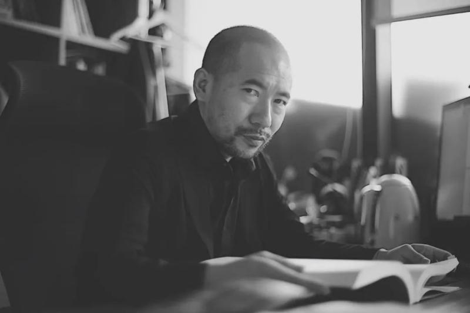
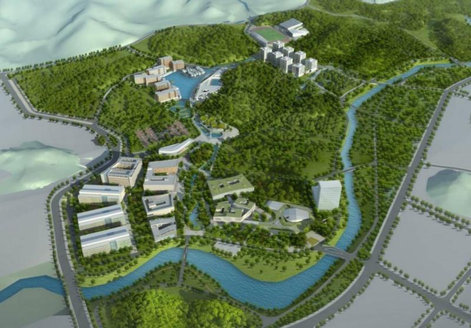
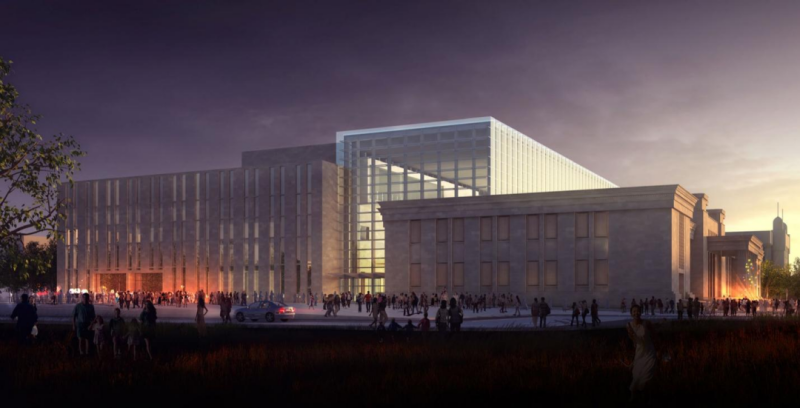
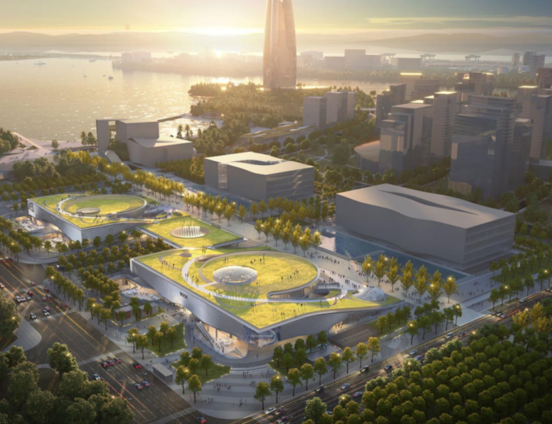
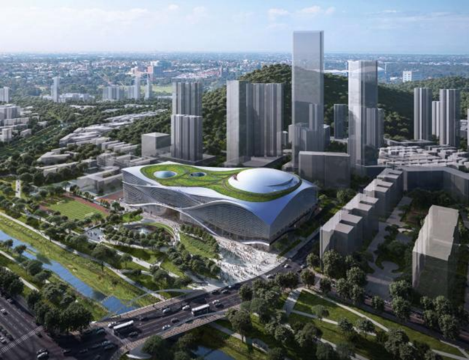
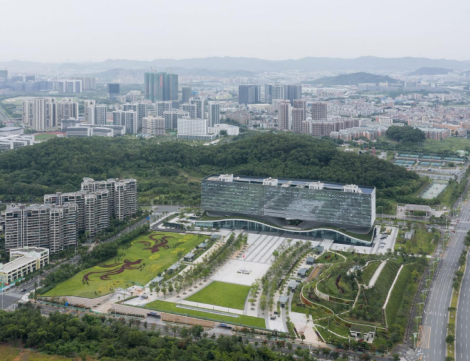
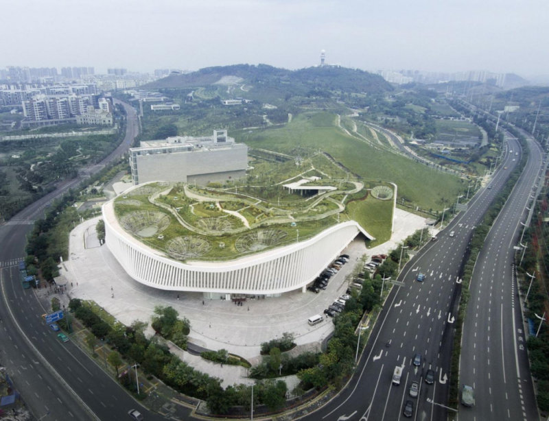

<td align="center" class="tbcolor10" colspan="2" valign="top">
<table border="0" cellpadding="0" height="100%" width="100%">
<tbody><tr><td align="right" height="35px" style="font-size:9pt">
<a href="javascript:window.close()" title="关闭本窗口">关闭窗口</a>｜<a href="print.asp?id=542287" target="_blank" title="打印本页内容">打印张贴版</a>    

</td></tr>
<tr>
<td align="center" height="500" valign="top">
<table border="0" cellpadding="4" cellspacing="0" height="100%" style="border-collapse: collapse;word-break:break-all;" width="86%">
<tbody><tr>
<td align="center" height="80px"><span style="font-family:方正小标宋简体;font-size: 25px;color: #C70E5C"><font color="black">冯果川：中国当代住宅小史   大师讲堂【深大建规学院2025年度学术讲座系列】</font></span></td>
</tr>
<tr>
<td align="center" height="50px" style="font-size: 9pt"><font color="#808080">建筑与城市规划学院　2025/3/4 11:19:00</font><br/> 
<font color="#F8F8F8" style="font-size:9pt">（钟沛基 2022280095）</font></td>
</tr>
<tr>
<td height="300" valign="top">
<div ksdocclipboard="ksDocClipboardId:'{6e36ba46-1742-013f-1843-276ba105115a-0}';from:'outline';priorityFormat:'';mimetypes:'text/html;text/plain';dataType:'';srcRange:'';ext:'e30='"><div finger="kso-wps-otl" source="374979320091"><p backgroundcolor="0" class="otl-paragraph"><span class="color_font" style="color:#3E3E3E;font-size:16px;">深圳大学建筑与城市规划学院2025年度学术讲座系列、“建筑班”四年级 2024-2025学年第二学期设计课大师讲堂（1）</span></p><p backgroundcolor="0" class="otl-paragraph" style="text-align: center;"><span class="color_font" style="color:#3E3E3E;font-size:16px;"></span></p><p style="text-align: left; height: auto; overflow: hidden;"><span class="color_font" style="color: rgb(62, 62, 62); font-size: 16px;">讲座题目：</span><span class="color_font" style="color: rgb(62, 62, 62); font-size: 16px; font-weight: bold;">中国当代住宅小史</span></p><p backgroundcolor="0" class="otl-paragraph" textalign="left"><span class="color_font" style="color:#3E3E3E;font-size:16px;">主讲人：冯果川，</span><span class="color_font" style="color:#3E3E3E;font-size:16px;">深圳市建筑设计研究总院股份有限公司执行总建筑师。首届深圳市工程勘察设计大师、国家一级注册建筑师、正高级工程师、中国建筑学会建筑评论分会理事会理事 、广东省土木建筑学会环境艺术专业委员会委员、深圳市注册建筑师协会理事会理事。</span></p><p backgroundcolor="0" class="otl-paragraph"></p><p backgroundcolor="0" class="otl-paragraph" textalign="left"><span class="color_font" style="color:#3E3E3E;font-size:16px;">讲座时间：2025年3月6日  8：30-12：00</span></p><p backgroundcolor="0" class="otl-paragraph" textalign="left"><span class="color_font" style="color:#3E3E3E;font-size:16px;">讲座地点：深大建规学院C105</span></p><p backgroundcolor="0" class="otl-paragraph" textalign="left"><span class="color_font" style="color:#3E3E3E;font-size:16px;">学术主持：钟中教授</span></p><p backgroundcolor="0" class="otl-paragraph" textalign="left"><span class="color_font" style="color:#3E3E3E;font-size:16px;font-weight:bold;">嘉宾介绍：</span></p><p backgroundcolor="0" class="otl-paragraph" textalign="left"><span class="color_font" style="color:#3E3E3E;font-size:16px;">       </span><span class="color_font" style="color:#3E3E3E;font-size:16px;">深圳市建筑设计研究总院股份有限公司执行总建筑师。首届深圳市工程勘察设计大师、国家一级注册建筑师、正高级工程师、中国建筑学会建筑评论分会理事会理事 、广东省土木建筑学会环境艺术专业委员会委员、深圳市注册建筑师协会理事会理事。多年从事大型公共建筑设计、城市设计。获得多项国家、省、市级设计奖项，主持设计了深圳南方科技大学、新疆艺术中心、深圳书城湾区城，深圳大沙河文体中心、深圳光明公共服务平台、南宁规划展示馆等重要项目。</span></p><p backgroundcolor="0" class="otl-paragraph"></p><p backgroundcolor="0" class="otl-paragraph" textalign="left"><span class="color_font" style="color:#3E3E3E;font-size:16px;">       同时致力于跨界整合建筑设计、城市设计、景观设计、公共艺术等不同领域提高城市的整体艺术水准。曾参加深圳公共雕塑展、珠海公共艺术季、西安公共艺术展、深圳“光±”公共艺术展、深圳香港城市建筑双城双年展等。</span></p><p backgroundcolor="0" class="otl-paragraph" style="text-align:center;" textalign="center"><span class="color_font" style="color:#3E3E3E;font-size:16px;"></span></p><p backgroundcolor="0" class="otl-paragraph" style="text-align:center;" textalign="center"><span class="color_font" style="color:#3E3E3E;font-size:16px;">冯果川</span></p><p backgroundcolor="0" class="otl-paragraph"><span class="color_font" style="color:#3E3E3E;font-size:16px;font-weight:bold;">主要作品：</span></p><p backgroundcolor="0" class="otl-paragraph" style="text-align: center;"><span class="color_font" style="color:#3E3E3E;font-size:16px;font-weight:bold;"></span></p><p backgroundcolor="0" class="otl-paragraph" style="text-align:center;" textalign="center"><span class="color_font" style="color:#3E3E3E;font-size:16px;">深圳南方科技大学校园规划</span></p><p backgroundcolor="0" class="otl-paragraph" style="text-align:center;" textalign="center"><span class="color_font" style="color:#3E3E3E;font-size:16px;"></span></p><p backgroundcolor="0" class="otl-paragraph" style="text-align:center;" textalign="center"><span class="color_font" style="color:#3E3E3E;font-size:16px;">新疆艺术中心</span></p><p backgroundcolor="0" class="otl-paragraph" style="text-align:center;" textalign="center"><span class="color_font" style="color:#3E3E3E;font-size:16px;"></span></p><p backgroundcolor="0" class="otl-paragraph" style="text-align:center;" textalign="center"><span class="color_font" style="color:#3E3E3E;font-size:16px;">深圳书城湾区城</span></p><p backgroundcolor="0" class="otl-paragraph" style="text-align:center;" textalign="center"><span class="color_font" style="color:#3E3E3E;font-size:16px;"></span></p><p backgroundcolor="0" class="otl-paragraph" style="text-align:center;" textalign="center"><span class="color_font" style="color:#3E3E3E;font-size:16px;">深圳大沙河文体中心</span></p><p backgroundcolor="0" class="otl-paragraph" style="text-align:center;" textalign="center"><span class="color_font" style="color:#3E3E3E;font-size:16px;"></span></p><p backgroundcolor="0" class="otl-paragraph" style="text-align:center;" textalign="center"><span class="color_font" style="color:#3E3E3E;font-size:16px;">深圳光明公共服务平台</span></p><p backgroundcolor="0" class="otl-paragraph" style="text-align:center;" textalign="center"><span class="color_font" style="color:#3E3E3E;font-size:16px;"></span></p><p backgroundcolor="0" class="otl-paragraph" style="text-align:center;" textalign="center"><span class="color_font" style="color:#3E3E3E;font-size:16px;">南宁规划展示馆</span></p></div></div><link href="/szu.css" rel="stylesheet" type="text/css"/><link href="/szu.css" rel="stylesheet" type="text/css"/></td>
</tr>
<tr><td height="0" style="font-size: 9pt"></td></tr>
<tr><td align="right" style="font-size: 9pt">撰稿：梁舒然　审核：钟  中  <br/>（更新于2025/3/4 11:30:00）<br/> </td></tr>
</tbody></table>
</td>
</tr>
</tbody></table>
</td>
